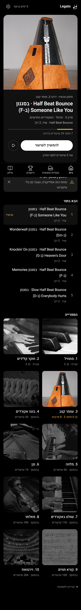
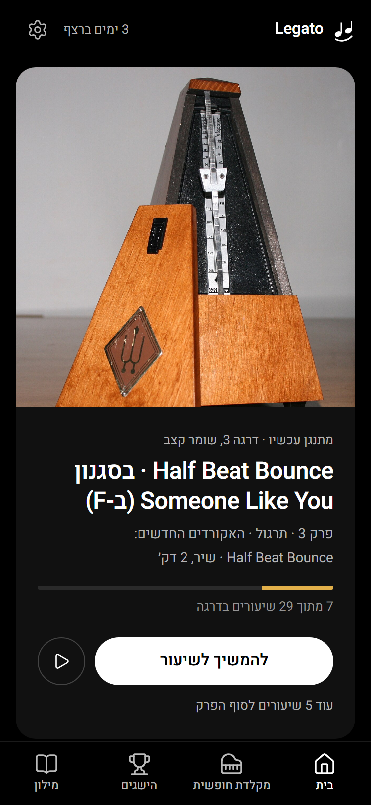
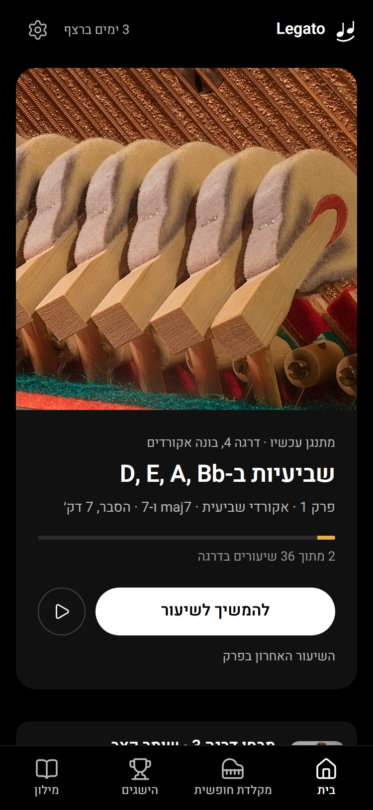
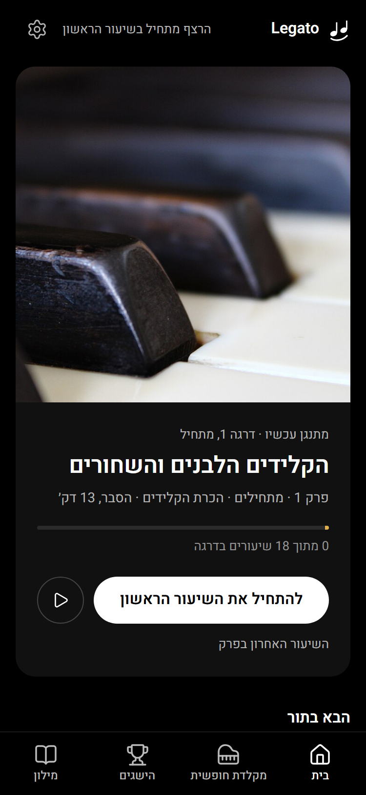
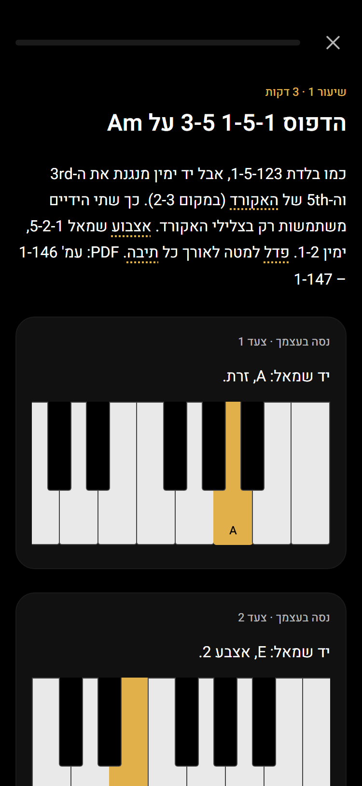
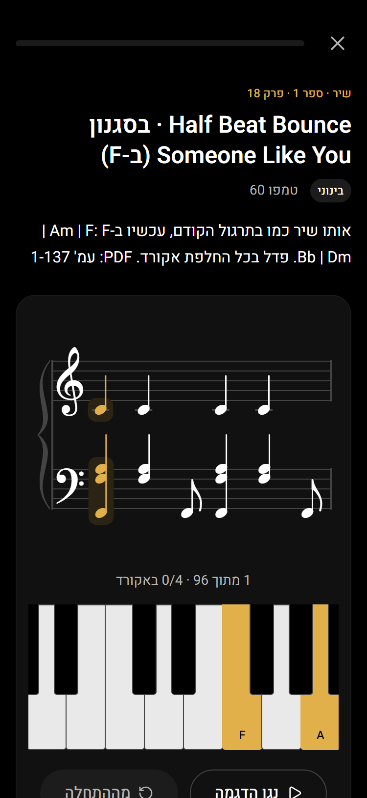
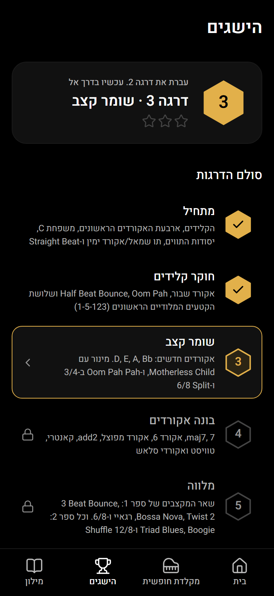
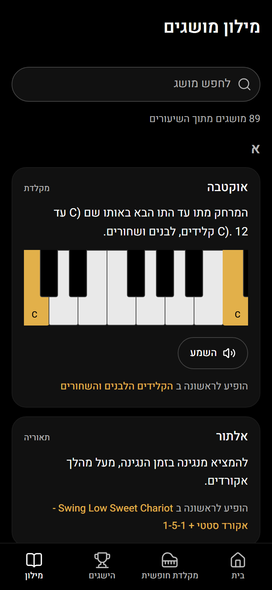
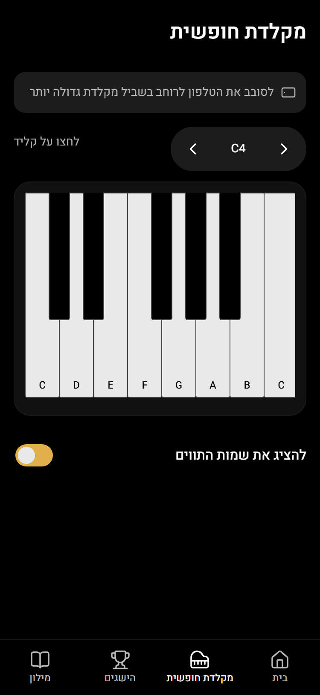
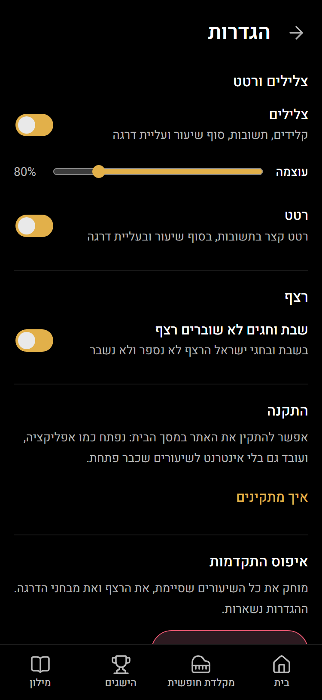

לילה · שלב 1
כל האתר בצבעים ובגופן של לילה, ומסך הבית החדש. שאר המסכים כבר בצבעים החדשים, ויקבלו עיצוב משלהם בשלבים הבאים.
מסך הבית
באמצע דרגה 3. "מתנגן עכשיו", הבא בתור, והספרייה של עשר הדרגות.

מצבים של מסך הבית
מימין לשמאל: באמצע דרגה · דרגה שנגמרה ומחכה למבחן (שורת המבחן מתחת ל"מתנגן עכשיו") · חשבון חדש.



שאר המסכים, בצבעים החדשים
שיעור הסבר · שיר · הישגים · מילון · מקלדת חופשית · הגדרות (בלי בחירת מצב בהיר/כהה: יש עכשיו מצב אחד).





